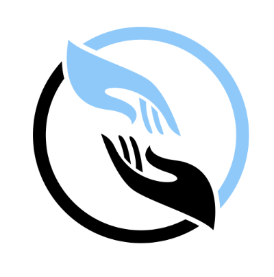

Programa de Entrenamiento Liderazgo Estratégico
Ver con Intención
Responde al terminar el episodio; no durante
Serie · Designated Survivor · Episodio 01 · Piloto · Semana 1
Antes de responder
Este formulario es tuyo. No hay respuestas correctas ni incorrectas.
Escribe lo que realmente pensaste; no lo que crees que debería decir un buen líder.
La honestidad es el insumo crítico de este proceso; sobre ella estructuraremos la sesión para garantizar el fortalecimiento de tus competencias y tu evolución profesional.
Escribe lo que realmente pensaste; no lo que crees que debería decir un buen líder.
La honestidad es el insumo crítico de este proceso; sobre ella estructuraremos la sesión para garantizar el fortalecimiento de tus competencias y tu evolución profesional.
Mi compromiso al abrir este formulario
Responderé únicamente desde mi realidad y conocimiento propio, sin apoyos externos. Este contenido es de mi autoría y constituye el insumo clave para potenciar mis habilidades y asegurar un progreso real en este proceso.
Test de valoración
¿Dónde estoy hoy?
1 = Nunca · 2 = Pocas veces · 3 = A veces · 4 = Con frecuencia · 5 = Siempre
Responde desde lo que realmente haces, no desde lo que quisieras hacer.
Autoconciencia emocional
¿Puedo identificar en tiempo real qué emoción está operando en mí cuando estoy bajo presión, antes de que afecte mi decisión?
NuncaSiempre
Mapeo de poder
Cuando entro a una reunión o situación nueva, sé leer quién tiene el poder real, más allá de los títulos o cargos.
NuncaSiempre
Clasificación de decisiones
Distingo con claridad qué decisiones puedo tomar rápido y cuáles requieren más análisis antes de actuar.
NuncaSiempre
Claridad estructural
Cuando comunico una posición difícil, lo hago con claridad, sin rodeos ni exceso de justificación.
NuncaSiempre
Reconocimiento de patrones propios
Soy capaz de identificar cuándo estoy reaccionando desde un patrón automático, en lugar de respondiendo conscientemente.
NuncaSiempre
Escena ancla · Serie Designated Survivor · Episodio 01 · Piloto
Kirkman está viendo el discurso del Estado de la Unión desde una cabaña, relegado, ya casi fuera del gabinete. Segundos después, el Capitolio explota. Le dicen que es el Presidente. Su cara no es de héroe. Es de alguien que no quería ese rol.
